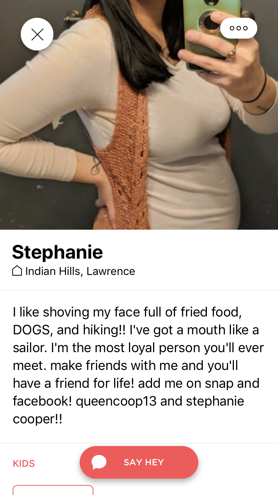

An app for moms — a UX case study

Overview
The app was aimed at moms socializing with other moms, also it featured the function of meeting new moms, finding playmates for your kids, and selling your preowned stuff to others.
Pain Points
I am a full-time mom, when I browsed through the posts in the Facebook groups that I am in, I noticed that other moms, like me, had the same needs and sometimes we had the same pain points for raising up a kid, where to find other kids whose are the same ages as mine, where to meet other moms and mingle with them and where to find a babysitter, etc., then I came up with the idea of creating an app which helps moms solve all these pain points.
User Research


Survey- Good Forms. I really wanted to know more about my target audience and then I created a survey and sent out to the Facebook groups that I am in. I got 70 responses from other moms which provided very important data for my further analysis.
I asked questions like, what functions of the app are you expecting; what are the obstacles that you face when trying to find a play pal and an event for your kids and what kind of activities do you like to look for your kids.
Some of the answers fell into my assumptions while others were totally out of my expectations. The answers were very candid and intuitive. The age of moms were varied sharply from 19 to 50! The top three answers for expectations of the app were finding an events, mom meet-ups and getting reviews and recommendations. For what are the obstacles for finding an event, answers were time constraints and no where/ so many places to find an event. For the obstacles of finding a playmates for your kids, the answers centered around time clashes and social anxiety.
Persona


My thoughts for the personas. Based on the statistics that I collected, half of the moms were full-time workers, while others were full-time moms. The time allocation to kids were varied sharply since then. The moms who need to work were capable of investing in most of their time with kids at weekends while the time for the full-time moms were more flexible.
Inspirations
Events Pages
Finding Playmates Pages
Chatting Pages
Market Pages
My thoughts for events pages- The events function was the main function of the whole app. It tried to tailer the moms of different daily routine. For example, if you are a working mom, it will promote you more events happened in weekends.
My thoughts for finding playmates pages- In the survey responses, most of the moms mentioned distance when trying to find playmates for their kids. Under this circumstance, searching nearby friends would be useful since kids can play with their neighbors.
My thoughts for chatting pages- The users were able to chat in their local chatting groups or they could join some interest groups where moms share the some same interest. They were also capable of adding new friends and chatting with them.
My thoughts for market pages- Are you overwhelmed by the baby stuff which are strewn at home here and there? Then the market function is a good place for you to sell your items to other moms. Also it served the function of getting reviews and recommendations.
Sum Up
I am a UX enthusiast and love to apply what I self-learned into practice and solve some kind of daily tasks. It was a great way for me to see where was my problems while designing and tried to avoid them next time. Please let me know your thoughts about my design! Any comments or feedbacks means a lot to me!